04 总线协议
总线协议
对比
UART总线
概述
定义：
- UART(Universal Asynchronous Receiver/Transmitter)通用异步收发器：异步、串行、全双工通信
- USART(Universal Synchronous/Asynchronous Receiver/Transmitter)通用同步/异步收发器：同步或者异步、串行、全双工通信
- 异步时靠波特率进行数据同步
- 同步时需要额外的CLK线
UART和USART不是总线，是点对点通信
特点：
- 点对点通信
- 传输距离较远(可达几十米)
- 硬件简单，成本低
硬件结构
| 信号线 | 作用 |
|---|---|
| TX | 发送数据线 |
| RX | 接收数据线 |
| GND | 共地线 |
- UART原始输出是TTL电平，可通过PHY芯片转成别的电平，比如RS232、RS485、USB
通信时序
数据帧格式
起始位：1位低电平
数据位：5-9位(通常8位)
校验位：可选(奇校验/偶校验/无校验)
停止位：1-2位高电平
波特率
- 双方必须约定相同的波特率(如9600, 115200等)
- 波特率误差需控制在允许范围内(通常≤3%)
数据流控制
无流控：简单通信
硬件流控：使用RTS/CTS信号线
软件流控：使用XON/XOFF控制字符
面试题
1.串行通信和并行通信的区别
| 特性 | 串行通信 | 并行通信 |
|---|---|---|
| 数据传输方式 | 数据按位依次传输（单条线路） | 数据多位同时传输（多条线路） |
| 线路复杂度 | 简单（线路少，成本低） | 复杂（线路多，成本高） |
| 抗干扰能力 | 较强（时序控制严格） | 较弱（多线路同步难，易受干扰） |
| 传输距离 | 较远（如USB、以太网） | 较短（如打印机电缆） |
| 速度 | 现代高速串行（如PCIe）可超越并行 | 传统并行更快，但高频时同步困难 |
| 典型应用 | USB、RS-232、SATA、网络通信 | 旧式打印机、IDE硬盘接口、PCI总线 |
2.串行通信如何保证数据同步
（1）同步串行通信
- 时钟信号同步：
- 发送方和接收方共享同一时钟（如SPI、I2C），或通过编码将时钟嵌入数据（如曼彻斯特编码）
- 例如：SPI协议通过SCLK信号同步每一位数据
- 数据帧结构：
- 使用起始位、停止位、同步字符（如UART的
0x55）标识数据边界 - 例如：I2C协议以起始条件（Start Condition）和停止条件（Stop Condition）标记帧的起止
- 使用起始位、停止位、同步字符（如UART的
（2）异步串行通信
- 波特率匹配：
- 双方约定相同的波特率（如9600bps），通过定时器采样数据位
- 误差需控制在允许范围内（通常≤3%）
- 起始/停止位：
- 每个字节以起始位（低电平）开始，停止位（高电平）结束，重新同步时序
- 例如：UART协议中，接收方检测到起始位后，在数据位中点采样
（3）高级同步技术
差分信号（如RS-485、USB）：
- 通过双绞线传输反向信号，抑制共模干扰，提升同步稳定性
时钟恢复技术（如PCIe、SATA）：
- 接收端从数据流中提取时钟（CDR, Clock Data Recovery），消除时钟偏移问题
协议层校验：
- 使用CRC校验或重传机制（如TCP）确保数据完整性
2.UART与IIC、SPI的区别是什么
- UART是异步的，靠波特率同步而不是时钟线
- UART是点对点通信，而后2者是总线
3.串口结合DMA，如何实现不定长的数据接收
- 利用IDLE中断：串口外设在一帧数据传输完毕后，如果在规定时间内没有新的字节到来，就会产生IDLE中断，在其中读取DMA计数器来获得传输了多少字节
4.UART通信中常见问题及解决方案
| 问题 | 可能原因 | 解决方案 |
|---|---|---|
| 数据错误 | 波特率不匹配 | 检查双方波特率设置 |
| 只能单方向通信 | 线路接反或损坏 | 检查TX/RX交叉连接 |
| 长距离通信不稳定 | 信号衰减 | 改用RS485差分信号 |
| 高波特率通信失败 | 时钟精度不足 | 使用更高精度晶振 |
| 多字节丢失 | 缓冲区溢出 | 启用硬件流控或减小发送间隔 |
5.UART有哪些校验方式
奇校验：数据中1的个数+校验位=奇数
偶校验：数据中1的个数+校验位=偶数
- UART的硬件流控如何工作
RTS(Request To Send)：发送方准备好发送数据时拉低
CTS(Clear To Send)：接收方准备好接收数据时拉低
工作流程：
1.发送方检查CTS，若为低则开始发送
2.接收方缓冲区快满时拉高CTS阻止发送
3.发送方检测到CTS变高后暂停发送
7.常见电平标准
| 标准 | 电平定义 | 传输距离 | 拓扑结构 | 典型应用场景 |
|---|---|---|---|---|
| TTL | 0V=0, 3.3V/5V=1 | <1m | 点对点 | 板内芯片间通信 |
| RS-232 | ±3V~±15V(负逻辑) | 15m | 点对点 | 电脑串口、老式设备 |
| RS-485 | ±1.5V~±5V(差分) | 1200m | 多点总线 | 工业现场总线 |
| USB | 差分信号(D+/D-) | 5m | 树形拓扑 | 外设连接 |
I2C总线
概述
- 定义：I2C是一个用于短距离数据传输的低速、串行、同步总线，支持半双工通信
- 通信速度：包括4种通信速度
- Standard Mode：100K bit/s
- Fast Mode：400K bit/s
- Fast Mode+：1M bit/s
- High-Speed Mode：3.4M bit/s
硬件结构
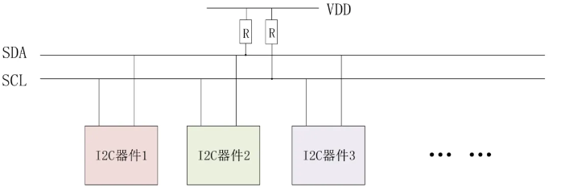
- I2C包含SCL、SDA2根线，它是一种多主多从的总线架构，2根线上可以挂多个设备
- 控制器连接I2C总线的GPIO必须设置为开漏模式，以支持==线与==功能，并且需要外部上拉
- 线与：只有所有GPIO都是高电平的时候，该总线才是高电平，只要有一个GPIO为低电平，整个总线就被拉低
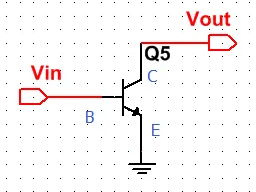
开漏输出示意图：
- mos管导通时，输出低电平
- mos管断开时，输出电平不确定，由外部电路决定
通信时序
在分析I2C总线的具体时序之前，我们得先知道它有哪些具体操作，只有这样我们才能知道分析的时序是干啥的
起始和结束
由于有上拉电阻在空闲情况下，SCL和SDA都一直是高电平，发生以下时序时意味着开始/结束通信：
- 开始通信：SCL高电平时，SDA由高变低
- 结束通信：SCL高电平时，SDA由低变高
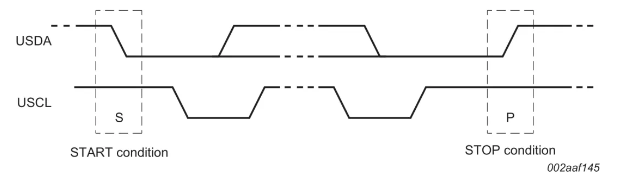
总线响应
每次传输完一个字节后，从设备必须进行一个回应，回应是ACK或者NACK信号
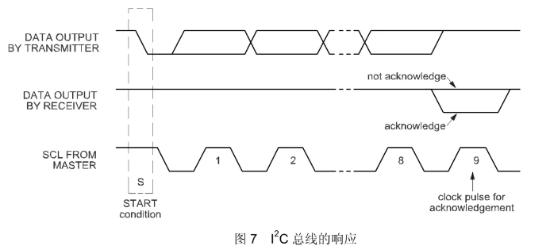
- ACK：传输完8bit后，在第9个bit，SCL高电平时，如果SDA是低电平，则回应的是ACK
- NACK：传输完8bit后，在第9个bit，SCL高电平时，如果SDA是高电平，则回应的是NACK
spec规定以下几种情况会出现NACK：
- 主机发送到总线上的地址，却没有匹配的从机，因此出现NACK
- 从机处于 busy 状态，出现 NACK
- 在传输过程中，从机获取其不理解的数据或命令
- 在传输过程中，从机无法再接收任何数据字节
- 主接收机必须向从发射机发送传输结束的信号的时候，会出现NACK
- HS mode 的 master code 是 NACK
写数据
- I2C通信时，==数据的传输是以字节为单位的==（大端序），起始时是7 bit的地址+1bit的读/写位
- 在每次传输一个字节后，从机都应该回答一个ACK
- 在传完最后一个字节时，正常情况下从机也会回复一个ACK，然后主机发送一个STOP信号。如果从机回复一个NACK，主机也会发送STOP信号，并上报一个ACK error
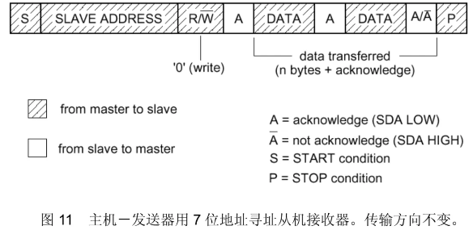
读数据
- 主机从slave端读数据时，每读一个字节，主机端都应该回应ACK，在读完最后一个字节需要停止传输时，主机需要回应一个NACK
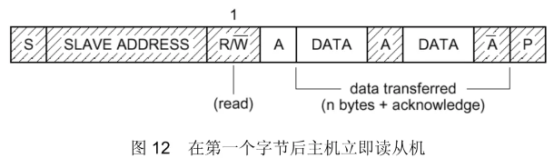
复合格式
- 主机端可以连续对2个地址不同的从机发起通信，且中间不需要STOP信号
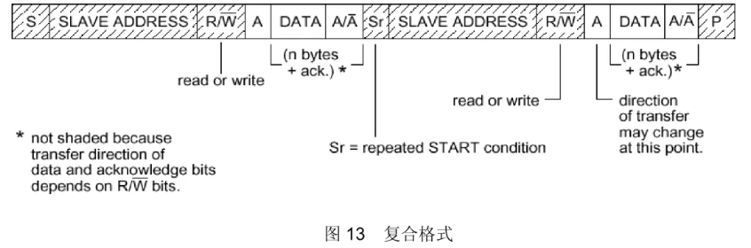
总结
- 以 START 条件开始，以 STOP 条件结束
- 一个 START 后面紧跟着一个 STOP 信号，是非法格式
- 传输的第一个字节为 7bit 从机地址 + 1bit 读写位
- 每个总线上的设备都会比较 STRAT 信号后面的 7bit 地址与自己的地址是否匹配
- 每个 byte(8 bits)后面都会有 ACK 或者 NACK
- 在 START 信号或者 repeated START 信号后，从机必须重置自己的总线逻辑
- 主机 master 可以不产生 STOP 信号，而是直接产生一个 repeated START 信号+另外一个设备地址，直接开始访问另外一个设备
常见问题
1.一个I2C总线上最多能挂多少设备
- 7位地址：理论上最多128个设备(2^7)
- 10位地址：理论上最多1024个设备(2^10)
但是 I2C 协议规定，总线上的电容不可以超过 400pF。管脚都是有输入电容的，PCB 上也会有寄生电容，所以会有一个限制。实际设计中经验值大概是不超过 8个器件
2.运行过程中，如果新的IIC设备接入，主机和从机如何交换地址？
- 主机发送广播地址（遍历所有预定义的地址进行扫描），等待应答
- 从机监听到自己地址后进行应答
3.IIC从机地址配置方式
- 内部固定地址：某些 I2C 从机设备具有内部固定的从机地址，无法进行配置或更改。在这种情况 下，从机地址是设备制造商预定义的。
- 硬件引脚配置：一些 I2C 从机设备具有专用引脚或引脚配置选项，用于设置从机地址。通过使用跳 线帽、电阻、芯片的引脚配置等方式，用户可以将特定的引脚配置为高电平或低电平，从而设置从 机地址。
- 寄存器配置：一些 I2C 从机设备允许使用特殊的寄存器配置来设置从机地址。这通常通过主机和从机之间的特殊序列和命令来实现。
面试题
1.为什么I2C需要使用上拉电阻？
- GPIO是开漏输出，需要上拉为总线提供确定的高电平
- 限制总线电流，避免短路
- 与总线电容共同决定信号上升时间，影响通信速率
2.为什么I2C要求开漏输出？
- 多主机仲裁：多个主机可同时驱动低电平而不损坏电路，冲突时通过”线与”特性仲裁
- 电平兼容：不同电压的设备可共用总线（上拉至各自VCC）
- 热插拔安全：避免输出冲突导致短路
3.I2C的地址位数是多少？
4.I2C的通信速率有哪些？
5.I2C的基本时序是什么？
6.I2C如何实现多主机通信？
- 时钟同步：多个主机的SCL线与操作，形成统一时钟
- 仲裁机制：
- 各主机同时发送地址/数据
- 当检测到自身输出电平与总线不一致时自动退出发送（开漏输出的”线与”特性）
- 最终优先级高的主机赢得仲裁
7.I2C的时钟拉伸是什么？
- 时钟拉伸（延展）：I2C 主设备始终控制着时钟线 SCL，不论是往设备写还是从设备读。一般情况下，如操作对象是 EEPROM 或者其他简单设备而言，无所谓，但是，如果从设备是处理器，在接到主机命令后要去处理一些运算然后得出结果返回给主机。这个时候可能造成来不及处理。怎么办?这时，从设备会主动控制时钟线把它拉低!直到数据准备好之后再释放时钟线，把控制权交还给 MASTER。这也是 I2C 通信系统中，从机唯一能控制总线的时候!关键是很多 I2C 主机不支持 clock stretching 功能，所以无法和带有 clock stretching 功能的从机通信!所以,各位在选择主机器件之前，必须要注意这一点，不然整个设计方案可能报废，影响很大。
8.I2C通信中常见的问题及解决方案？
| 问题 | 解决方案 |
|---|---|
| 总线死锁 | 硬件复位/SCL时钟脉冲法恢复 |
| ACK信号丢失 | 检查地址/上拉电阻/设备供电 |
| 信号毛刺 | 降低速率/缩短走线/加滤波电容 |
| 地址冲突 | 使用软件可编程地址 或 放到不同总线上 |
| 长距离通信不稳定 | 改用更低速率/使用I2C缓冲器 |
9.如何计算I2C总线上拉电阻的合适值？
上拉电阻过小，电流大，端口低电平 level增大，会发现总线上电平拉不到 0V
上拉电阻过大，上升沿时间增大，方波可能会变成三角波
具体公式请看飞书文档
10.I2C与SPI的对比及选择依据？
| 特性 | I2C | SPI |
|---|---|---|
| 线路数 | 2线（SCL+SDA） | 4线（SCK+MISO+MOSI+CS） |
| 速度 | ≤5Mbps | ≥50Mbps（可达100Mbps+） |
| 寻址方式 | 软件地址（节省硬件引脚） | 硬件片选（需更多引脚） |
| 拓扑结构 | 多主多从 | 单主多从（菊花链可选） |
| 功耗 | 较低（开漏结构） | 较高（推挽输出） |
| 复杂度 | 协议简单 | 硬件实现简单 |
| 常规用途 | 命令 | 数据 |
| 应答 | yes | no |
- 选I2C当：设备多/引脚受限/速度要求低/需要热插拔
- 选SPI当：高速传输/实时性强/点对点通信
其实还有一点很重要的区别，从操作方式的角度来看，虽然SPI和IIC都只管传输字节，不关注数据帧的内容，但是大部分的器件都遵循以下规律：
| 特性 | I2C | SPI |
|---|---|---|
| 操作方式 | 写寄存器地址 + 数据 | 发命令（Command）+ 参数（Parameter） |
| 示例 | I2C_Write(0x01, 0xFF) |
SPI_SendCmd(0xB2); SPI_SendData(0x0B); |
| 底层逻辑 | 类似“内存访问”（地址+数据） | 类似“远程调用”（命令+参数） |
11.spi的命令和参数一般都几个字节？iic的寄存器和数据一般都几个字节？这是由协议决定的还是datasheet
- 完全由datasheet决定
- 大部分的寄存器地址（IIC）和命令（SPI）都是1个字节，数据/参数的字节就五花八门了，可能1个字节的命令后面跟了好几个的参数，每个参数还不是1个字节的
12.I2C如何保证主从设备通信一致
- I2C采用了很多机制来保证主从设备通信一致性，包括：
- 硬件层同步机制：
- 共享时钟
- 开漏输出+上拉电阻
- 协议层同步机制：
- 起始/结束信号
- 地址匹配
- 应答机制
- 数据有效性规则(SDA必须在SCL高电平时稳定)
- 错误检测与恢复机制：
- 总线仲裁机制(通过线与)
- 超时检测(SCL被长时间拉低,主设备可能会触发复位)
- 硬件层同步机制：
SPI总线
概述
定义：SPI是一种高速、全双工、同步、一主多从式的串行通信协议，无应答机制
通信速度：几十MHZ甚至上百MHZ，取决于CPU的SPI控制器的时钟以及外设
低速模式：1~10 Mbps（如传感器）
高速模式：10~100 Mbps（如Flash存储器、显示屏）
实际速率受限于：
- 主从设备支持的最高频率
- 线路长度和干扰（高频需短距离布线）
比如STM32的SPI控制器的最大速率为18MHZ，i.MX6ULL的最大速率为52MHZ，而一些器件比如ICM20608传感器只支持8MHZ
分类：SPI协议根据数据线（MOSI/MISO）的使用方式衍生出多种变体，主要包括 Standard SPI、Dual SPI、Quad SPI 和 QPI/OPI 等。这些变体通过增加数据线数量或改变通信方式，显著提升了传输效率
| 类别 | 数据线数量 | 传输位数/周期 | 速率提升 | 典型应用 |
|---|---|---|---|---|
| Standard | 2（MOSI+MISO） | 1-bit | 基准 | 低速传感器 |
| Dual | 2（DQ0+DQ1） | 2-bit | 2× | SPI Flash |
| Quad | 4（DQ0~DQ3） | 4-bit | 4× | 高速存储器 |
| QPI | 4（指令复用） | 4-bit | 4× | 嵌入式Flash |
| OPI | 8（DQ0~DQ7） | 8-bit | 8× | 超高速存储（HyperBus） |
硬件结构
以Standard SPI为例：
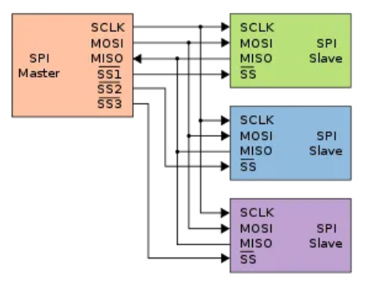| 信号线 | 作用 |
|---|---|
| SCK | 主设备提供的时钟信号 |
| MOSI | 主设备输出，从设备输入（数据） |
| MISO | 从设备输出，主设备输入（数据） |
| SS/CS | 从设备片选（低电平有效） |
拓扑结构：
- 标准模式：每个从设备独立片选
- 菊花链模式：多个从设备共享片选，数据级联传递
工作模式
SPI 有四种工作模式，通过时钟极性(CPOL)和时钟相位(CPHA)的搭配来得到四种工作模式:
- CPOL=0，串行时钟空闲状态为低电平
- CPOL=1，串行时钟空闲状态为高电平
- CPHA=0，串行时钟的奇数跳变沿(上升沿或下降沿)采集数据
- CPHA=1，串行时钟的偶数跳变沿(上升沿或下降沿)采集数据
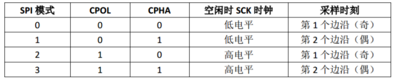
如何确定所使用的工作模式呢？
- 一般需要看芯片手册，比如对于LSM6DS3TR-C这款IMU，它的芯片手册有这样一段话：
SPC is the serial port clock and it is controlled by the SPI master. It is stopped high when CS is high (no transmission). SDI and SDO are, respectively, the serial port data input and output. Those lines are driven at the falling edge of SPC and should be captured at the rising edge of SPC.
- CPOL：因为它空闲时停止在高电平，所以CPOL=1
- CPHA：因为他在第二个跳变沿对数据采样，所以CPHA=1
通信时序
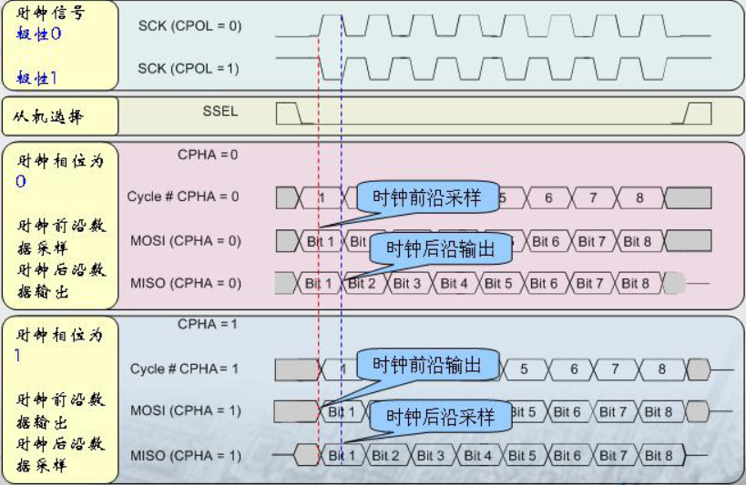起始和结束
- 开始通信：CS(片选引脚)由高边低
- 结束通信：CS(片选引脚)由低变高
数据读写
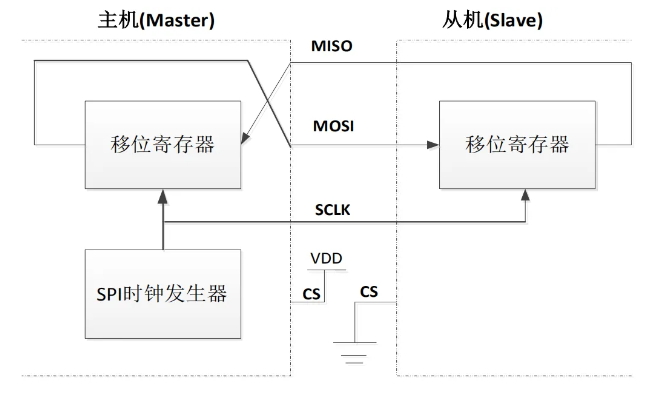使用SPI通信时，主机和从机内都会有移位寄存器，主机通过向它的移位寄存器中写一个字节来发起一次数据传输，主机通过MOSI线将移位寄存器中的数据发给从机，从机接收到数据后，将它移位寄存器里的旧数据通过MISO发给主机，并将新数据保存到移位寄存器中
- SPI和IIC一样，数据的传输是以字节为单位的
- SPI通信实际上可以看成主机和从机交换移位寄存器的数据
- 如果我们仅需要写/读数据，那么主机就可以忽略收到的数据，或者发送个空的数据
下面以CPOL=1，CPHA=1为例，详细看一下通信时序
（1）主机往从机写数据
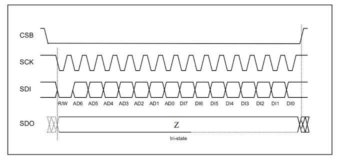
主机发送先发送 8bits，第一个 bit 为0代表这次主机是想写数据到从机，AD6~AD0 表示要写的寄存器地址。然后，主机就会一直写下去。在这期间 SD0 一直没用，一直是高阻态，算是一直读到 1
（2）主机向从机读数据
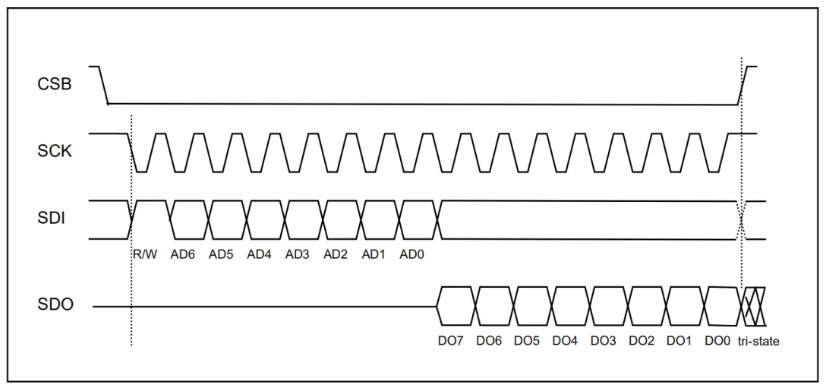这种情况下，主机先发送 8 bits，第一位为1代表这次是读，然后 AD6~ AD0 是想要读的寄存器地址，然后 SDO开始返回数据。
面试题
1.如何选择合适的SPI模式？
- 查阅手册：优先遵循从设备规格书要求（如Flash芯片通常指定模式0或3）
- 信号完整性：高速时选择下降沿采样（模式1/3）可减少时钟抖动影响。
- 兼容性：通用传感器常用模式0，Flash常用模式3
2.描述SPI的基本时序
- 片选激活：主机拉低目标从机的SS信号
- 时钟同步：主机生成SCK，数据在时钟边沿被采样：
- 发送：主机在MOSI输出数据位（MSB/LSB优先可配置）
- 接收：从机在MISO返回数据（全双工下同时进行）
- 片选释放：通信完成后拉高SS
3.SPI通信中数据是如何传输的？
- 位传输：每个SCK周期传输1位数据（Standard SPI），Dual/Quad SPI可传输多比特
- 帧结构：无固定协议，通常为裸字节流，可自己封装个协议（需主从约定）
4.如何实现多从设备的SPI通信？
- 独立片选法（常用）：每个从机独占一条SS线，主机分时激活不同SS
- 优点：逻辑简单
- 缺点：引脚占用多（N+3线）
- 菊花链法：所有从机共享SS，数据级联传递（如74HC595）
- 优点：节省引脚
- 缺点：延迟累积，需特殊硬件支持
5.影响SPI通信速度的因素有哪些？
- 硬件限制：主从设备支持的最高SCK频率
- 信号质量：长走线或干扰会导致时序偏移
- 软件开销：CPU中断处理或软件模拟SPI的延迟
6.如何提高SPI通信的效率？
- 硬件加速：使用DMA传输（如STM32的SPI+DMA）
- 增大帧长：减少片选切换次数（如32位数据帧替代8位）
- 时钟优化：选择更高SCK频率（需满足设备时序要求）
7.SPI通信中常见的问题及解决方法？
| 问题 | 解决方法 |
|---|---|
| 数据错误 | 检查CPOL/CPHA模式匹配，缩短走线 |
| 从机无响应 | 确认SS信号有效，检查电源和复位电路 |
| 信号干扰 | 增加滤波电容，使用屏蔽线 |
| 速率不稳定 | 降低SCK频率，检查时钟源稳定性 |
8.在实际项目中，如何选择SPI的时钟频率？
- 保守策略：初始设置为从机标称最大频率的50%（如Flash标称80MHz则先用40MHz）
- 动态调整：逐步提高频率，通过CRC或回读验证数据正确性
9.如何处理不同SPI设备的模式差异？
- 软件配置：动态切换主设备的CPOL/CPHA
- 硬件隔离：为不同模式设备分配独立SPI控制器
10.如何编写可靠的SPI驱动程序？
- 加入超时机制和CRC校验
11.如何调试SPI通信问题？
- 逻辑分析仪：抓取SCK/MOSI/MISO信号，验证时序和模式
- 寄存器检查：确认SPI控制器的CR1/CR2配置（如BR[2:0]分频位）
- 环路测试：短接MOSI和MISO，验证主机自发自收
12.在嵌入式RTOS环境中，如何管理SPI资源？
- 互斥锁：防止多任务竞争SPI总线（如FreeRTOS的
xSemaphoreTake） - 信号量：同步DMA传输完成事件（如
xSemaphoreGiveFromISR） - 优先级控制：高优先级任务抢占SPI总线需谨慎（避免低优先级任务饿死）